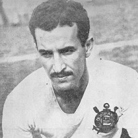

Quiz do CURINTIA
Um game sobre a história de um gigante do futebol brasileiro

Quem é o maior artilheiro da história do clube?
Claudio
Marcelinho-Carioca
Jô
Paulinho
Sócrates
Neto



Claudio 2
Se você ama futebol e não conhece Cláudio, isso não é exatamente um problema. É que o maior artilheiro de um dos maiores clubes do Brasil se tornou famoso na década de 1950. Em 550 jogos, ele marcou 305 gols e levantou 8 taças